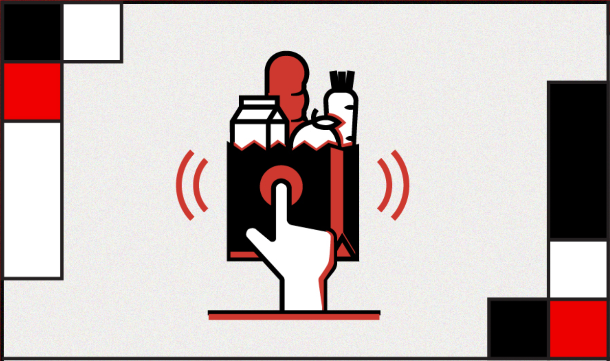
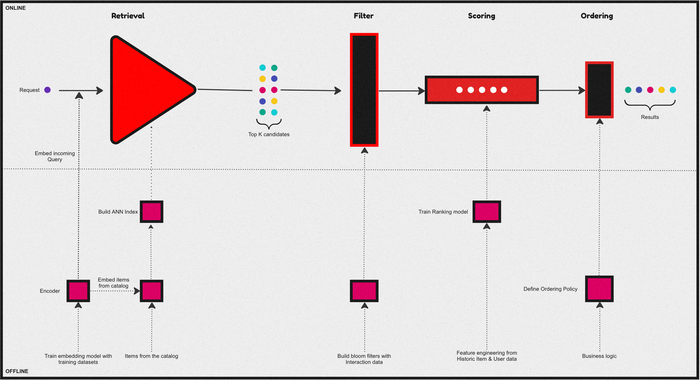
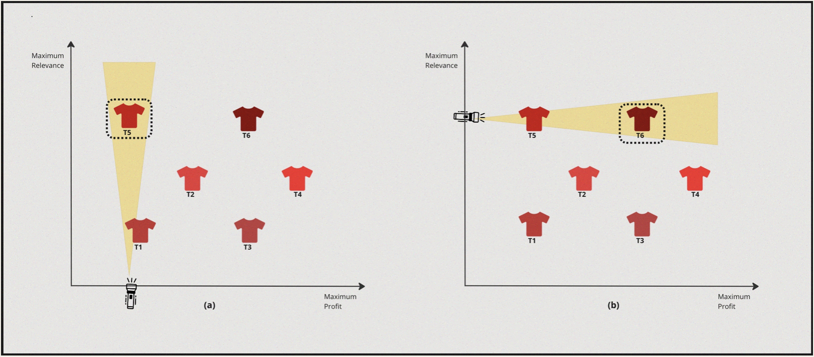

The Backdrop
It took humans less than a decade to reach a level of sophistication to reach a stage where with less than a couple of keystrokes on a phone one could get the most elaborate meal delivered at home. That’s the magic of the internet revolution. In recent times this trend has only gotten sharper and sharper, with the on-demand delivery space heating up, an Indian consumer can receive anything from an egg to the most lavish dinner faster than it takes to respond to a slack message, in fact as of 2022 - you can get most things delivered under 10 minutes!
The implication of this is that the customers do not need to plan anything much in advance and that the time between desire, action, and gratification has shrunk to almost zero. One such Hypothetical unicorn startup in this space is Hyper - Which started just over two years ago and has seen massive growth in a short period.
Hyper is known mainly for its super fast, sub-10-minute delivery of almost anything that one can think of! However, In the past couple of weeks, the sentiment trends around sub-10-minute style deliveries seem to be sharply negative due to various factors especially concerned around the lack of empathy towards Hyper’s delivery partners. What was once a strength seems to be turning into pain for the company and many are asking if we have gone too far.
Within this Hypothetical backdrop where Hyper is reevaluating its business strategy, Hyper’s engineering team set’s forth on a journey to contribute towards its initiative of bringing a bit more balance within the marketplace. This marketplace is not overly user-centric but also is fair for other stakeholders like a delivery partners as well.
Enter recommendation systems, systems that sit at the heart of how most digital marketplaces perform. Most of the digital economies are shaped by these systems - the scale, convenience, and speed of marketplaces like Hyper are enabled by recommendation systems and search engines. Hence, what these systems optimize for and how they behave are of critical importance. Within a marketplace, there are a lot of factors that come into play, and the success of any given marketplace is closely tied to how you match, cater & satisfy the requirements of all the stakeholders like the consumers, suppliers, and more.
In a series of articles, let’s dive deeper into how these systems are designed, and optimized and explore their inner workings and also learn how these systems (or parts of them, to be precise) can be built in practice.
But first, let’s establish a couple of definitions, terms & concepts.
Introduction
At the core of any recommendation system, there would be something like a collaborative filtering model (matrix factorization or tensor factorization), latent variable model, neural embeddings-based model, or Neural Collaborative filtering models, and these systems would come in one of these variants - Short vs Long term recommendations, cold start & cohort-based, Multi view and multi-interest models or multi-task recommendations. The most common trend in all these systems usually would be that they all are focused on delivering single user-centric recommendations. These systems were designed to address concerns around user needs, behavior, interests, interactions & personalization. Further, they are measured on user engagement-oriented metrics.
But, caring only about a single user type, might not yield the most optimal outcome especially when there are many stakeholders involved within a platform - aka recommendation systems within a marketplace-type setting could not be designed with a single entity in mind. This is where the need for a recommendation system that caters to different stakeholders with different sets of interests arises.
Hence, Recommendations in marketplaces are multi-sided. Equipped to cater not just to a single user’s (aka buyer) needs, but also the supplier’s needs & most often they also have to consider platform economics within the play. Such a system is usually designed with many objectives in mind - some of these objectives are User expectations, user understanding, supplier exposure, supplier goals, platform objectives, and long-term value.
Now let’s further look into these different stakeholders, their objectives & the interplay between these objectives that usually arise within this ecosystem.
Stakeholders, Objectives & the Objective interplay
In a multi-sided system with multiple objectives often the objectives interact and behave in different manners. At a high level, you could categorize the different types of these interplay as follows:
- Correlated : Optimising for one objective helps the other.
- Neutral: Optimising for one does not impact the other
- Anti Correlated: Optimising for one hurts the other
Consider the example of our Hypothetical on-demand delivery startup Hyper, which is a three-sided marketplace - i.e it has three sets of stakeholders with different motivations & objectives.
| Stakeholder | Needs/Motivations | Potential Objectives |
|---|---|---|
| End User | Wants to order something from local partner shops. |
|
| Merchants | Provide online visibility and find customers. |
|
| Delivery Partners | Earn a stable livelihood. |
|
As we see above each entity has a unique set of potential objectives one could optimise the recommendation system for & this has to be done in a deliberate and careful way or it might result in undesired outcomes.
In short, what a system optimises for is super important & in general, it needs to look for a balance while optimising for various objectives.
Before we proceed further on the track of optimising for multiple objectives (or multiple objective optimisation) - let us quickly visit how most modern recommendation systems look like & also do a quick recap of how one builds a model for ranking (aka Learning to rank) & some key metrics used for measuring these systems.
A Quick Recap on modern recsys

Over the past few years, a common and a central design pattern has emerged around how most industrial recommendation systems are designed. If one were to summarise this design pattern, it would appear as described in the above figure - consisting of 4 stages. Let us take a brief look at the functionality of these four stages:
Candidate retrieval
The Retrieval & filtering stages usually are collectively refered to as candidate generation, this is a fast but coarse step which essentially narrows down the search space of items from millions of candidates for a given query to soemthing in order of 100s.
This is often achieved by an initial retrieval with some form of matching between the query and the catalog usually via an ANN, Graph based approach or some form of decision trees. Followed by a filtering stage, where invalid candidates are removed from the initial retrieval before passing onto the next stages.
Ranking
At this phase we further narrow down the initial set of items into a much smaller list that would be presented to the user. This is a slow but more precise operation - this stage is usually modelled as an LTR task or a classification task. Further, sometimes it’s followed by an ordering stage which handles various types of business logic to reorder/sort the final list of items. Some common examples of these business logic include: organising recommendations to fit genre distributions in streaming services or promoting certain segments of sellers as in case of ecommerce.
A Quick Recap on Learning to Rank
Learning to rank (LTR) refers to a class of ML techniques for training a model to solve the task of ranking a set of items. Usually this is formulated as a supervised or sometimes semi-supervised task.
Generally, this means we try to learn a function \(f(q, D)\) given a query \(q\) & a list of documents \(D\) to predict the order/rank of the documents within this list. Depending on how the loss function is formulated in the underlying task, any LTR algorithm can be classified into 3 distinct categories:
- Pointwise method
- Pairwise method
- Listwise method
Ranking Task
Given a query \(q\), and a set of \(n\) documents \(D=d_1,d_2,...,dn\), we’d like to learn a function \(f\) such that \(f(q, D)\) will predict the relevance of any given document associated with a query.
Pointwise method
In pointwise method, the above ranking task is re-formulated as a standard classification/regression task. The function to be learned \(f(q, D)\) is simplified as \(f(q, d_i)\) i.e the relevance of each document given a query is scored independently.
For instance, if we have two queries associated with 2 and 3 resulting matched documents:
- \(q_1 \to d_1, d_2\)
- \(q_2 \to d_3, d_4, d_5\)
Then the training data \(x_i\) in a pointwise method will essentially be every query-document pair as follows:
- \(x_1 : q_1, d_1\)
- \(x_2 : q_1, d_2\)
- \(x_3 : q_2, d_3\)
- \(x_4 : q_2, d_4\)
- \(x_5 : q_2, d_5\)
Since each document is scored independently with the absolute relevance as the target label, the task is no different from any standard classification or regression task. As such any standard ml algorithms can be leveraged in this setting.
Pairwise method
In pairwise method, the goal is to learn a pointwise scoring function \(f(q, d_i)\) similar to a pointwise formulation. However, the key difference arises in how the training data is consructed - where we take pairs of documents within the same query as training samples.
- \(x_1 \to q_1, (d_1, d_2)\)
- \(x_2 \to q_1, (d_3, d_4)\)
- \(x_3 \to q_1, (d_3, d_5)\)
- \(x_4 \to q_1, (d_4, d_5)\)
In this setting, a new set of pairwise binary labels are derived, by comapring the individual relevance score in each pair. For example, given the first query \(q_1\), if \(y_1==\) (i.e.. an irrelevant document) for \(d_1\) & \(y_2=3\) (i.e.. a Highly relevant document) for \(d_2\) then we can create a new label \(y_1<y_2\) for the pair of docs \((d_1, d_2)\) - by doing so we have essentially converted this back to a binary classification task again.
Now in order to learn the function \(f(q, d_i)\) which is still pointwise, but in a pairwise manner, we model the difference in scores probablistically as follows:
\[P(i>j) \equiv \frac{1}{1+exp^{-(s_i - s_j)}}\]
i.e, if document \(i\) is better matched than document \(j\) (denoted as \(i>j\)), then the probability of the scoring function to have scored \(f(q, d_i) = S_i\) should be close to 1. In other words, the model is trying to learn, given a query, how to score a pair of documents such that a more relevant document would be scored higher.
Listwise method
Listwise methods, solve the problem of ranking by learning to score the entire list jointly and they do so via two main sub techniques:
- Direct optimization of IR measures such as NDCG.(Eg: SoftRank, AdaRank).
- Minimize a loss function that is defined based on understanding the unique properties of the kind of ranking you are trying to achieve. (E.g. ListNet, ListMLE).
Let’s do a quick review of one of these approaches:
Consider ListNet, Which is based on the concept of permutation probability of a list of items. In this case we assume there is a pointwise scoring function \(f(q,di)\) used to score and rank a given list of items. But instead of modeling the probability as a pairwise comparison using scoring difference, we model the probability of the entire list of results. In this setting our documents and query dataset would appear like this:
- \(x_1 : q_1, (d_1, d_2)\)
- \(x_2 : q_2, (d_3, d_4, d_5)\)
First let’s look at the Permutation probability. Let’s denote \(π\) as a specific permutation of a given list of length \(n\), \(\Theta (s_i) = f(q, d_i)\) as any increasing function of scoring \(s_i\) given a query \(q\) and a document \(i\). The probability of having a permutation \(π\) can be written as follows:
\[P(\pi) = \prod_{i=1}^n \frac{\phi(s_i)}{\sum_{k=i}^n\phi(s_k)}\]
To illustrate consider a list of 3 items, then the probability of returning the permutation \(s_1\),\(s_2\),\(s_3\) is calculated as follows:
\[P(\pi = \{s_1, s_2, s_3\}) = \frac{\phi(s_1)}{\phi(s_1) + \phi(s_2) + \phi(s_3)} \cdot \frac{\phi(s_2)}{\phi(s_2) + \phi(s_3)} \cdot \frac{\phi(s_3)}{\phi(s_3)}\]
Due to computational complexity, ListNet simplies the problem by looking at only the top-one probability of a given item. The top-one probability of object i equals the sum of the permutation probabilities of permutations in which object i is ranked on the top. Indeed, the top-one probability of object i can be written as:
\[P(i) = \frac{\phi(s_i)}{\sum_{k=1}^n \phi(s_k)}\]
Given any two list of items represented by top-one probabilities, we can now measure the difference between them using cross entropy. Then we can use an ml algorithm which minimises that cross entropy. The choice of function \(ϕ(⋅)\), can be as simple as just an exponential function. When \(ϕ(⋅)\) is expotential and the list length is two, the solution basically reduces to a pairwise method as described earlier.
With that brief introduction out of the way, let’s also quickly look at the advantages and disadvantages of each of these approaches:
| Method | Advantages | Disadvantages |
|---|---|---|
| Pointwise |
|
|
| Pairwise |
|
|
| Listwise |
|
|
A Quick Recap on Ranking Evaluation metrics
Over the years, there have been several metrics which have been proposed and widely used for evaluating a ranking model. If we were to summarise them and list the most popular ones it boils down to this:
| Metric Type | Metric |
|---|---|
| Binary Relevance | Mean Average Precision (MAP) |
| Binary Relevance | Mean Reciprocal Rank (MRR) |
| Graded Relevance | Normalized Discounted Cumulative Gain (NDCG) |
| Graded Relevance | Expected Reciprocal Rank (ERR) |
In general, binary metrics only consider relevant v.s. irrelevant, while graded metrics also consider the ranking among relevant items. The degree of relevancy matters in this case when scoring a list of items.
Mean Average Precision (MAP)
MAP is a measure based on binary label of relevancy. To compute this first we define precision at k for a given query \(P@k(q)\) as:
\[P@k(q) \equiv \frac{\sum_{i=1}^k r_i}{k}\]
for an ordered list of prediction \(r_i\) for all \(k\) items. \(ri=1\) if it is relevant and 0 otherwise.Then we define the average precision given a query \(AP(q)\) at \(k\) items as:
\[AP(q)@k \equiv \frac{1}{\sum_{i=1}^k r_i} \sum_{i=1}^k P@i(q) \times r_i\]
Mean Average Precision is just the mean of \(AP(q)\) for all queries:
\[MAP \equiv \frac{\sum_{q=1}^Q AP(q)}{Q}\]
Also, MAP is an order sensitive metric because of the term \(r_i\) in the calculation of AP. It is essentially taking the average of precision at each ranking position and penalizing the precision at positions with irrelevant item by strcitly setting them to zeroes.
Here is a simple example for computing MAP:

Mean Reciprocal Rank (MRR) & Expected Reciprocal Rank (ERR)
Reciprocal rank metrics focus mainly on the first correctly predicted relevant item in a list. Given a list of items, and say \(r_i\) is the rank of the highest ranking relevant item & if the the 2nd item is the first relevant item in the list, then the reciprocal rank for this query would be \(\frac{1}{2}\). By extension, each query will have a reciprocal rank. Hence, Mean reciprocal rank is essentially the average of reciprocal rank for all the queries, which would be represented as follows:
\[MRR \equiv \frac{1}{Q} \sum_{i=1}^Q\frac{1}{r_i}\]
Expected reciprocal rank tries to quantify how useful a document at rank \(i\) conditioned on the degree of relevance of documents at rank less than \(i\) are. The intution behind this is based on the empirical findings from web search task, that the likelihood a user will examine the document at rank \(i\) is dependent on how satisfied the user was with previously observed documents in the list.
Lets assume the probability of a user finding the result is satisfied at position \(i\) in a list of items is denoted as \(R_i\) & the likelihood of a session for which the user is satisfied and stops at position \(r\) is: \[\prod_{i=1}^{r-1}(1 - R_i)R_r\]
Now we can model \(R_i\) such that it is an increasing function of relevance:
\[R = R(g) \equiv \frac{2^g - 1}{2^{g_{max}}}\]
where \(g\) is the graded relevance such that \(g \in \{0, 1, ..., g_{max}\}\) & \(g = 0\) implies an irrelevant document and \(g = g_{max}\) implies a relevant document.
Now we can define ERR as follows:
\[ERR \equiv \sum_{r=1}^n\frac{1}{r}R_r\prod_{i=1}^{r-1}(1-R_i)\]
Here \(\frac{1}{r}\) is treated as a utility function \(\tau(r)\) that satisfies \(\tau(1) = 1\) and \(\tau(r) \rightarrow 0\) as \(r \rightarrow \infty\).
Note that ERR is a metric on a list with a single query, To evaluate results from multiple queries, we will need to further average ERRs among queries.
Here is a simple example for computing MRR:

Normalized Discounted Cumulative Gain (NDCG)
Normalized Discounted Cumulative Gain (NDCG) is one of the most popular metric for measuring the quality of a set of ranked items in search or recommendations. If we were to break the assumptions made by this metric in simple terms, it would be as follows:
- Cumulative Gain: Very relevant items are more useful than somewhat relevant items which are more useful than completely irrelevant items.
- Discounting: Relevant items are more useful when they appear earlier in a list of ranked items.
- Normalization: The result of the ranking should be irrelevant to the query performed.
Let’s define Discounted Cumulative Gain at position \(k\) as follows:
\[DCG@k \equiv \sum_{i=1}^k\frac{2^{l_i} - 1}{log_2(i + 1)}\]
where \(l_i\) is the grading of relevance at rank \(i\). Intutively, the numerator is simply an increasing function of relevance, the more relevant the higher. This is the gain from each item. The denominator is a decreasing function of ranking position, this is the discounted component of the metric. Collectively, higher relevance gains more score, but the lower it is ranked the higher also the discount. Essentially, the metric will prefer higher relevant item to be ranked higher, which is the desired outcome.
NDCG is then defined as:
\[NDCG@k = \frac{DCG@k}{IDCG@k}\]
where \(IDCG@k\) is the Ideal DCG@k given the result. DCG@k is calculated by sorting the given list of items by its true relevance labels. and IDCG@k is the maximum possible DCG@K value one can get given a ranked list of items.
Here is a simple example for computing NDCG:

Learning to rank with Multiple Objectives
MOO - The What, The Why & The How.
After that long detour, let’s now look into Multiple Objective Optimisation applied to Ranking problem within a marketplace type setting involving multiple stakeholders. Let’s do so with a simple illustrative example that involves similar item recommendations. Specifically, let’s understand Why this is needed first.
Picture this, A User has browsed and explored a bunch of different red shirts that he’s planning to buy, and on one such open tab we’ve got a shirt that he’s closely examining. Now, the recommendation system in the backend is also generating a bunch of similar shirts that he might be interested in, further let’s say the recommendation system is optimising for two different objectives - firstly, to show not just relevant but also personalised shirts similar to his style, based on his interaction history that he might explore further & perhaps buy. Secondly, the platform also wants to make sure it’s making a good profit on each sales that the recommendation system generates/leads to - hence wants to also promote shirts with a good margin. How would we do this?
Let’s start by defining our objectives:
| Objective I | Objective II |
|---|---|
| Personalisation | Price Margin |
Let’s also say the item options available to us to be displayed (let’s focus on finding the top-1 item at the moment.) if plotted on a graph look something like this:

Now, essentially we want to maximise profit margin but also we want to maximise for highly personalised & relevant shirt. If we were to solve this from a lens of single objectve optimisation two scenarios would arise:
Case-I: Applying 1D Optimisation to objective I followed by optimising for objective II, i.e First we can find Highly Personalised shirts and then search for the shirt that also provides maximum margin.
Case-II: Applying 1D Optimisation to objective II followed by optimising for objective I, i.e First we can find High Profit margin shirts and then search for the ones which are also Highly Personalised & relevant for the user’s style.
For a simple and better understanding of the concept, assume that someone is trying to find the best red shirt from both the perspectives manually in a physical store, and let’s further also assume its a dark room.
Case I : Highly Personalised & High Profit margin

- So, in this case the solver turns the torch on towards the relevance axis and discovers \(T5\) as the most suitable candidate.
- Now from this point the solver turns towards the profit axis and turns the torch on and discovers \(T6\).
Case II : High Profit margin & High Personalisation

- In this case the solver turns the torch on towards the profit axis and discovers \(T3\) as the best candidate.
- Now from this point the solver turns towards the relevance axis and turns the torch on and discovers \(T4\).
What do we have as of now:
| Process | 1st Optimization Objective | 2nd Optimization Objective | Optimal Solution |
|---|---|---|---|
| 1 | Personalisation | Profit Margin | \(T6\) |
| 2 | Profit Margin | Personalisation | \(T4\) |
So, that seems odd. there’s multiple solutions depending on what we actually want to achieve. If, we want to optimise for both and find the best solution, Going about in the above method seems to be not the best way. This is why, we need to optimise for finding solutions for both objectives collectively and the method or set of optimisation methods for it is called Multiple Objective Optimization.
Let’s deine what MOO is & try to understand some other associated important concepts first, before we see how these are applied to ranking task in industry.